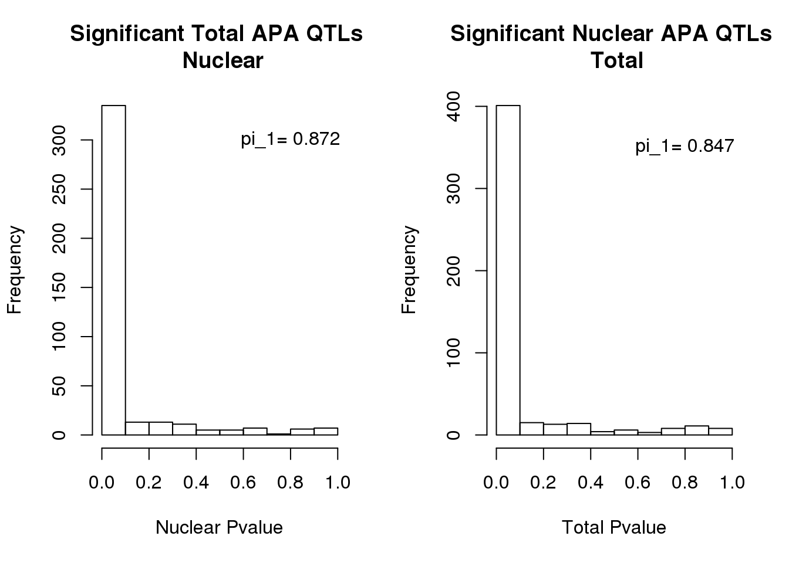
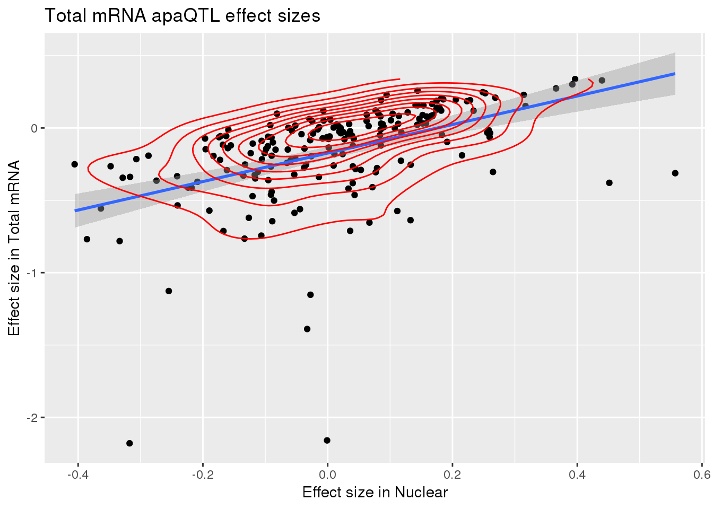
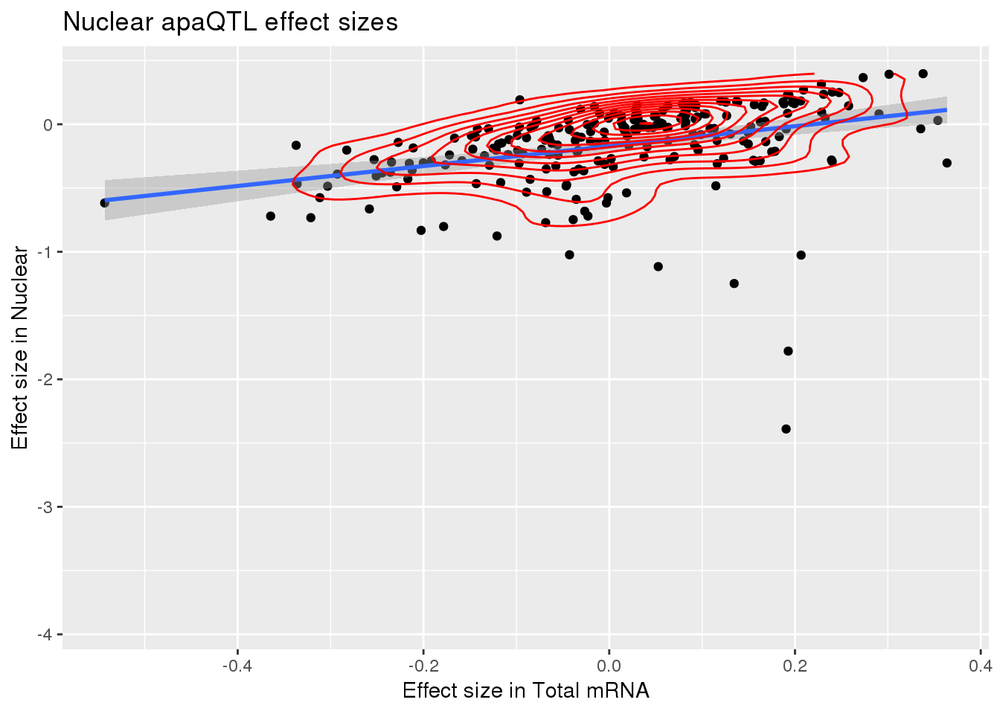

Last updated: 2020-03-23
Checks: 7 0
Knit directory: apaQTL/analysis/
This reproducible R Markdown analysis was created with workflowr (version 1.6.0). The Checks tab describes the reproducibility checks that were applied when the results were created. The Past versions tab lists the development history.
Great! Since the R Markdown file has been committed to the Git repository, you know the exact version of the code that produced these results.
Great job! The global environment was empty. Objects defined in the global environment can affect the analysis in your R Markdown file in unknown ways. For reproduciblity it’s best to always run the code in an empty environment.
The command set.seed(20190411) was run prior to running the code in the R Markdown file. Setting a seed ensures that any results that rely on randomness, e.g. subsampling or permutations, are reproducible.
Great job! Recording the operating system, R version, and package versions is critical for reproducibility.
Nice! There were no cached chunks for this analysis, so you can be confident that you successfully produced the results during this run.
Great job! Using relative paths to the files within your workflowr project makes it easier to run your code on other machines.
Great! You are using Git for version control. Tracking code development and connecting the code version to the results is critical for reproducibility. The version displayed above was the version of the Git repository at the time these results were generated.
Note that you need to be careful to ensure that all relevant files for the analysis have been committed to Git prior to generating the results (you can use wflow_publish or wflow_git_commit). workflowr only checks the R Markdown file, but you know if there are other scripts or data files that it depends on. Below is the status of the Git repository when the results were generated:
Ignored files:
Ignored: .DS_Store
Ignored: .Rhistory
Ignored: .Rproj.user/
Ignored: code/.Rhistory
Ignored: data/.DS_Store
Ignored: data/ProSeq/
Ignored: output/.DS_Store
Untracked files:
Untracked: .Rprofile
Untracked: ._.DS_Store
Untracked: .gitignore
Untracked: @
Untracked: GEO_brimittleman/
Untracked: _workflowr.yml
Untracked: analysis/._PASdescriptiveplots.Rmd
Untracked: analysis/._cuttoffPercUsage.Rmd
Untracked: analysis/APApeak_Phenotype_GeneLocAnno.Nuclear.5perc.fc.gz.qqnorm.allChrom
Untracked: analysis/APApeak_Phenotype_GeneLocAnno.Total.5perc.fc.gz.qqnorm.allChrom
Untracked: analysis/QTLexampleplots.Rmd
Untracked: analysis/cuttoffPercUsage.Rmd
Untracked: analysis/eQTLoverlap.Rmd
Untracked: analysis/interpret verify bam.Rmd
Untracked: analysis/interpret_verifybam.Rmd
Untracked: analysis/mergeRNA.Rmd
Untracked: analysis/oldstuffNotNeeded.Rmd
Untracked: analysis/remove_badlines.Rmd
Untracked: analysis/totSpecInNuclear.Rmd
Untracked: analysis/totSpecIncludenotTested.Rmd
Untracked: analysis/totalspec.Rmd
Untracked: apaQTL.Rproj
Untracked: checksumsfastq.txt.gz
Untracked: code/.NascentRNAdtPlotFirstintronicPAS.sh.swp
Untracked: code/._Allsplicesite2fasta.py
Untracked: code/._ApaQTL_nominalNonnorm.sh
Untracked: code/._BothFracDTPlotGeneRegions.sh
Untracked: code/._BothFracDTPlotGeneRegions_normalized.sh
Untracked: code/._ClosestTissuePAS.sh
Untracked: code/._ColocApAeQTL.sh
Untracked: code/._ColocApAeQTL_PM.sh
Untracked: code/._Coloc_generalAPAeQTL.R
Untracked: code/._Coloc_generalAPAeQTL_PM.R
Untracked: code/._CreateRNALZforeQTLs.sh
Untracked: code/._CreateRNALZnucAPAqtls.sh
Untracked: code/._DistPAS2Sig_RandomIntron.py
Untracked: code/._EandPqtl_perm.sh
Untracked: code/._EandPqtls.sh
Untracked: code/._ExtractGene4eQTLLZ.py
Untracked: code/._ExtractGene4eQTLLZpy
Untracked: code/._ExtractGeneRNAAssoc.py
Untracked: code/._ExtractPAS4LZeQTLs.py
Untracked: code/._ExtractPAS4eQTLsLZ.sh
Untracked: code/._ExtractPASforLZ.py
Untracked: code/._ExtractPASforLZ_run.sh
Untracked: code/._FC_NucintornUpandDown.sh
Untracked: code/._FC_UTR.sh
Untracked: code/._FC_intornUpandDownsteamPAS.sh
Untracked: code/._FC_nascentseq.sh
Untracked: code/._FC_newPeaks_olddata.sh
Untracked: code/._HMMpermuteTotal.py
Untracked: code/._HmmPermute.py
Untracked: code/._IntronicPASDT.sh
Untracked: code/._LC_samplegroups.py
Untracked: code/._LD_qtl.sh
Untracked: code/._LD_snpsproxy.sh
Untracked: code/._MapAllRBP.sh
Untracked: code/._NascentRNAdtPlot.sh
Untracked: code/._NascentRNAdtPlot3UTRPAS.sh
Untracked: code/._NascentRNAdtPlotExcludeFirstintronicPAS.sh
Untracked: code/._NascentRNAdtPlotNucPAS.sh
Untracked: code/._NascentRNAdtPlotTotPAS.sh
Untracked: code/._NascentRNAdtPlotintronicPAS.sh
Untracked: code/._NascnetRNAdtPlotPAS.sh
Untracked: code/._NetSeq_fourthintronDT.sh
Untracked: code/._NomResfromPASSNP.py
Untracked: code/._NuclearPAS_5per.bed.py
Untracked: code/._NuclearandRNA5samp_dtplots.sh
Untracked: code/._PTTfacetboxplots.R
Untracked: code/._PrematureQTLNominal.sh
Untracked: code/._PrematureQTLPermuted.sh
Untracked: code/._QTL2bed.py
Untracked: code/._QTL2bed_withstrand.py
Untracked: code/._RBPdisrupt.sh
Untracked: code/._RNAbam2bw.sh
Untracked: code/._RNAseqDTplot.sh
Untracked: code/._Randomsplicesite2fasta.py
Untracked: code/._Rplots.pdf
Untracked: code/._RunRes2PAS.sh
Untracked: code/._SAF215upbed.py
Untracked: code/._SnakefilePAS
Untracked: code/._SnakefilefiltPAS
Untracked: code/._TESplots100bp.sh
Untracked: code/._TESplots150bp.sh
Untracked: code/._TESplots200bp.sh
Untracked: code/._TotalPAS_5perc.bed.py
Untracked: code/._Totspec_example.sh
Untracked: code/._Totspec_exampleTOT.sh
Untracked: code/._Untitled
Untracked: code/._ZipandTabPheno.sh
Untracked: code/._aAPAqtl_nominal39ind.sh
Untracked: code/._allNucSpecQTLine.py
Untracked: code/._allNucSpecfromNonNorm.py
Untracked: code/._annotatePacBioPASregion.sh
Untracked: code/._annotatedPAS2bed.py
Untracked: code/._apaInPandE.py
Untracked: code/._apaQTLCorrectPvalMakeQQ.R
Untracked: code/._apaQTLCorrectpval_6or7a.R
Untracked: code/._apaQTL_Nominal.sh
Untracked: code/._apaQTL_nominalInclusive.sh
Untracked: code/._apaQTL_nominalv67.sh
Untracked: code/._apaQTL_permuted.sh
Untracked: code/._apaQTL_permuted_test6A7A.sh
Untracked: code/._apainRibo.py
Untracked: code/._assignNucIntonpeak2intronlocs.sh
Untracked: code/._assignTotIntronpeak2intronlocs.sh
Untracked: code/._bam2BW_5primemost.sh
Untracked: code/._bed2saf.py
Untracked: code/._bothFracDTplot1stintron.sh
Untracked: code/._bothFracDTplot4thintron.sh
Untracked: code/._bothFrac_FC.sh
Untracked: code/._callPeaksYL.py
Untracked: code/._changeRibonomQTLres2genename.py
Untracked: code/._changenomQTLres2geneName.py
Untracked: code/._chooseAnno2PAS_pacbio.py
Untracked: code/._chooseAnno2SAF.py
Untracked: code/._chooseSignalSite
Untracked: code/._chooseSignalSite.py
Untracked: code/._closestannotated.sh
Untracked: code/._closestannotated_byfrac.sh
Untracked: code/._cluster.json
Untracked: code/._clusterPAS.json
Untracked: code/._clusterfiltPAS.json
Untracked: code/._codingdms2bed.py
Untracked: code/._config.yaml
Untracked: code/._config2.yaml
Untracked: code/._configOLD.yaml
Untracked: code/._convertNominal2SNPLOC.py
Untracked: code/._convertNominal2SNPloc2Versions.py
Untracked: code/._convertNumeric.py
Untracked: code/._correctNomeqtl.R
Untracked: code/._createPlinkSampfile.py
Untracked: code/._dag.pdf
Untracked: code/._eQTL_switch2snploc.py
Untracked: code/._eQTLgenestestedapa.py
Untracked: code/._encodeRNADTplots.sh
Untracked: code/._extactPAS100meanphyloP.py
Untracked: code/._extractGeneLZfiles.sh
Untracked: code/._extractGeneLZfileseQTLs.sh
Untracked: code/._extractGenotypes.py
Untracked: code/._extractPACmeanPhyloP.py
Untracked: code/._extractPhylop50up.py
Untracked: code/._extractPhylopextra50.py
Untracked: code/._extractRNApval4lz.py
Untracked: code/._extractseqfromqtlfastq.py
Untracked: code/._fc2leafphen.py
Untracked: code/._fc_filteredPAS6and7As.sh
Untracked: code/._fifteenBPupstreamPAS.py
Untracked: code/._fiftyBPupstreamPAS.py
Untracked: code/._filter5perc.R
Untracked: code/._filter5percPheno.py
Untracked: code/._filterLDsnps.py
Untracked: code/._filterMPPAS.py
Untracked: code/._filterMPPAS_15.py
Untracked: code/._filterMPPAS_15_7As.py
Untracked: code/._filterMPPAS_50.py
Untracked: code/._filterSAFforMP.py
Untracked: code/._filterpeaks.py
Untracked: code/._finalPASbed2SAF.py
Untracked: code/._fix4su304corr.py
Untracked: code/._fix4su604corr.py
Untracked: code/._fix4sukalisto.py
Untracked: code/._fixExandUnexeQTL
Untracked: code/._fixExandUnexeQTL.py
Untracked: code/._fixFChead.py
Untracked: code/._fixFChead_bothfrac.py
Untracked: code/._fixFChead_short.py
Untracked: code/._fixGWAS4Munge.py
Untracked: code/._fixH3k12ac.py
Untracked: code/._fixPASregionSNPs.py
Untracked: code/._fixRNAhead4corr.py
Untracked: code/._fixRNAkalisto.py
Untracked: code/._fix_randomIntron.py
Untracked: code/._fixgroupedtranscript.py
Untracked: code/._fixhead_netseqfc.py
Untracked: code/._getAPAfromanyeQTL.py
Untracked: code/._getApapval4eqtl.py
Untracked: code/._getApapval4eqtl_unexp.py
Untracked: code/._getApapval4eqtl_version67.py
Untracked: code/._getDownstreamIntronNuclear.py
Untracked: code/._getIntronDownstreamPAS.py
Untracked: code/._getIntronUpstreamPAS.py
Untracked: code/._getQTLalleles.py
Untracked: code/._getQTLfastq.sh
Untracked: code/._getUpstreamIntronNuclear.py
Untracked: code/._grouptranscripts.py
Untracked: code/._intersectVCFandupPAS.sh
Untracked: code/._keep5perMAF.py
Untracked: code/._keepSNP_vcf.sh
Untracked: code/._make5percPeakbed.py
Untracked: code/._makeFileID.py
Untracked: code/._makePheno.py
Untracked: code/._makeSAFbothfrac5perc.py
Untracked: code/._makeSNP2rsidfile.py
Untracked: code/._makeeQTLempirical_unexp.py
Untracked: code/._makeeQTLempiricaldist.py
Untracked: code/._makegencondeTSSfile.py
Untracked: code/._mapSSsnps2PAS.sh
Untracked: code/._mergRNABam.sh
Untracked: code/._mergeAllBam.sh
Untracked: code/._mergeAnnotations.sh
Untracked: code/._mergeBW_norm.sh
Untracked: code/._mergeBamNascent.sh
Untracked: code/._mergeByFracBam.sh
Untracked: code/._mergePeaks.sh
Untracked: code/._miRNAdisrupt.sh
Untracked: code/._mnase1stintron.sh
Untracked: code/._mnaseDT_fourthintron.sh
Untracked: code/._namePeaks.py
Untracked: code/._netseqDTplot1stIntron.sh
Untracked: code/._netseqFC.sh
Untracked: code/._nominavalfortotspec.py
Untracked: code/._noninalpval4alltot.py
Untracked: code/._nucQTLGWAS.py
Untracked: code/._nucSpecQTLineData.py
Untracked: code/._nucSpeceffectsize.py
Untracked: code/._nucspecnucPASine.py
Untracked: code/._pQTLsotherdata.py
Untracked: code/._pacbioDT.sh
Untracked: code/._pacbioIntronicDT.sh
Untracked: code/._parseALLSSres.py
Untracked: code/._parseBestbamid.py
Untracked: code/._parseLDRes.py
Untracked: code/._parseLDresBothPAS.sh
Untracked: code/._parseRanodmSSres.py
Untracked: code/._parseSSres.py
Untracked: code/._peak2PAS.py
Untracked: code/._peakFC.sh
Untracked: code/._pheno2countonly.R
Untracked: code/._phenoQTLfromlist.py
Untracked: code/._processYRIgen.py
Untracked: code/._pttQTLsinapaQTL.py
Untracked: code/._qtlRegionseq.sh
Untracked: code/._qtlsPvalOppFrac.py
Untracked: code/._quantassign2parsedpeak.py
Untracked: code/._removeXfromHmm.py
Untracked: code/._removeloc_pheno.py
Untracked: code/._riboQTL.sh
Untracked: code/._runCorrectNomEqtl.sh
Untracked: code/._runFixGWAS4Munge.sh
Untracked: code/._runHMMpermuteAPAqtls.sh
Untracked: code/._runHMMpermuteeQTLS.sh
Untracked: code/._runMakeEmpiricaleQTL_unexp.sh
Untracked: code/._runMakeeQTLempirical.sh
Untracked: code/._run_bam2bw_all3prime.sh
Untracked: code/._run_bam2bw_extra3.sh
Untracked: code/._run_bestbamid.sj
Untracked: code/._run_dist2sig_randomintron.sh
Untracked: code/._run_filtersnpLD.sh
Untracked: code/._run_getAPAfromeQTL_version6.7.sh
Untracked: code/._run_getApaPval4eqtl.sh
Untracked: code/._run_getapafromeQTL.py
Untracked: code/._run_getapafromeQTL.sh
Untracked: code/._run_getapapval4eqtl_unexp.sh
Untracked: code/._run_leafcutterDiffIso.sh
Untracked: code/._run_prxySNP.sh
Untracked: code/._run_pttfacetboxplot.sh
Untracked: code/._run_sepUsagephen.sh
Untracked: code/._run_sepgenobychrom.sh
Untracked: code/._run_verifybam.sh
Untracked: code/._selectNominalPvalues.py
Untracked: code/._sepUsagePhen.py
Untracked: code/._sepgenobychrom.py
Untracked: code/._snakemakePAS.batch
Untracked: code/._snakemakefiltPAS.batch
Untracked: code/._sortindexRNAbam.sh
Untracked: code/._specAPAinE.py
Untracked: code/._splicesite2fasta.py
Untracked: code/._submit-snakemakePAS.sh
Untracked: code/._submit-snakemakefiltPAS.sh
Untracked: code/._subsetAPAnotEorPgene.py
Untracked: code/._subsetAPAnotEorPgene_2versions.py
Untracked: code/._subsetAPAnotEorR.py
Untracked: code/._subsetApanoteGene.py
Untracked: code/._subsetApanoteGene_2versions.py
Untracked: code/._subsetNootherQTL.py
Untracked: code/._subsetUnexplainedeQTLs.py
Untracked: code/._subsetVCF_SS.sh
Untracked: code/._subsetVCF_noSSregions.sh
Untracked: code/._subsetVCF_upstreamPAS.sh
Untracked: code/._subset_diffisopheno.py
Untracked: code/._subsetpermAPAwithGenelist.py
Untracked: code/._subsetpermAPAwithGenelist_2versions.py
Untracked: code/._subsetvcf_otherreg.sh
Untracked: code/._subsetvcf_permSS.sh
Untracked: code/._subtrachfiveprimeUTR.sh
Untracked: code/._subtractExons.sh
Untracked: code/._subtractfiveprimeUTR.sh
Untracked: code/._tabixSNPS.sh
Untracked: code/._tenBPupstreamPAS.py
Untracked: code/._test.pdf
Untracked: code/._testVerifyBam.sh
Untracked: code/._tissuePAS2hg19.sh
Untracked: code/._totSeceffectsize.py
Untracked: code/._totspecinE.py
Untracked: code/._totspecqtlFacetBoxplots.sh
Untracked: code/._totspecqtlFacetBoxplotsTOT.sh
Untracked: code/._twentyBPupstreamPAS.py
Untracked: code/._utrdms2saf.py
Untracked: code/._vcf2bed.py
Untracked: code/._verifyBam18517N.sh
Untracked: code/._verifyBam18517T.sh
Untracked: code/._verifyBam19128N.sh
Untracked: code/._verifyBam19128T.sh
Untracked: code/._wrap_verifybam.sh
Untracked: code/._writePTTexamplecode.py
Untracked: code/._writePTTexamplecode.sh
Untracked: code/.pversion
Untracked: code/.snakemake/
Untracked: code/1
Untracked: code/APAqtl_nominal.err
Untracked: code/APAqtl_nominal.out
Untracked: code/APAqtl_nominal_39.err
Untracked: code/APAqtl_nominal_39.out
Untracked: code/APAqtl_nominal_inclusive.err
Untracked: code/APAqtl_nominal_inclusive.out
Untracked: code/APAqtl_nominal_nonNorm.err
Untracked: code/APAqtl_nominal_nonNorm.out
Untracked: code/APAqtl_nominal_versions67.err
Untracked: code/APAqtl_nominal_versions67.out
Untracked: code/APAqtl_permuted.err
Untracked: code/APAqtl_permuted.out
Untracked: code/APAqtl_permuted_versions67.err
Untracked: code/APAqtl_permuted_versions67.out
Untracked: code/Allsplicesite2fasta.py
Untracked: code/BothFracDTPlot1stintron.err
Untracked: code/BothFracDTPlot1stintron.out
Untracked: code/BothFracDTPlot4stintron.err
Untracked: code/BothFracDTPlot4stintron.out
Untracked: code/BothFracDTPlotGeneRegions.err
Untracked: code/BothFracDTPlotGeneRegions.out
Untracked: code/BothFracDTPlotGeneRegions_norm.err
Untracked: code/BothFracDTPlotGeneRegions_norm.out
Untracked: code/ClosestTissuePAS.sh
Untracked: code/ColocApAeQTL.err
Untracked: code/ColocApAeQTL.out
Untracked: code/ColocApAeQTL.sh
Untracked: code/ColocApAeQTLPM.err
Untracked: code/ColocApAeQTLPM.out
Untracked: code/ColocApAeQTL_PM.sh
Untracked: code/Coloc_generalAPAeQTL.R
Untracked: code/Coloc_generalAPAeQTL_PM.R
Untracked: code/CreateRNALZforeQTLs.sh
Untracked: code/CreateRNALZnucAPAqtls.sh
Untracked: code/DistPAS2Sig_RandomIntron.py
Untracked: code/EandPqtl.err
Untracked: code/EandPqtl.out
Untracked: code/EncodeRNADTPlotGeneRegions.err
Untracked: code/EncodeRNADTPlotGeneRegions.out
Untracked: code/ExtractGene4eQTLLZ.py
Untracked: code/ExtractGene4eQTLLZpy
Untracked: code/ExtractGeneRNAAssoc.py
Untracked: code/ExtractPAS4LZeQTLs.py
Untracked: code/ExtractPAS4eQTLsLZ.sh
Untracked: code/ExtractPASforLZ.py
Untracked: code/ExtractPASforLZ_run.sh
Untracked: code/FC_NucintronPASupandDown.err
Untracked: code/FC_NucintronPASupandDown.out
Untracked: code/FC_UTR.err
Untracked: code/FC_UTR.out
Untracked: code/FC_intronPASupandDown.err
Untracked: code/FC_intronPASupandDown.out
Untracked: code/FC_nascent.err
Untracked: code/FC_nascentout
Untracked: code/FC_newPAS_olddata.err
Untracked: code/FC_newPAS_olddata.out
Untracked: code/HmmPermute.p
Untracked: code/IntronicPASDT.err
Untracked: code/IntronicPASDT.out
Untracked: code/LD_vcftools.hap.out
Untracked: code/MapAllRBP.sh
Untracked: code/MapRBP.err
Untracked: code/MapRBP.out
Untracked: code/NascentDTPlotGeneRegions.err
Untracked: code/NascentDTPlotGeneRegions.out
Untracked: code/NascentDTPlotPAS.err
Untracked: code/NascentDTPlotPAS.out
Untracked: code/NascentDTPlotPAS_3utr.err
Untracked: code/NascentDTPlotPAS_3utr.out
Untracked: code/NascentDTPlotPAS_firstintron.err
Untracked: code/NascentDTPlotPAS_firstintron.out
Untracked: code/NascentDTPlotPAS_intron.err
Untracked: code/NascentDTPlotPAS_intron.out
Untracked: code/NascentDTPlotPAS_nuc.err
Untracked: code/NascentDTPlotPAS_nuc.out
Untracked: code/NascentDTPlotPAS_tot.err
Untracked: code/NascentDTPlotPAS_tot.out
Untracked: code/Nuclear_example.err
Untracked: code/Nuclear_example.out
Untracked: code/NuclearandRNA5samp_dtplots.sh
Untracked: code/NuclearandRNAFracDTPlotGeneRegions.err
Untracked: code/NuclearandRNAFracDTPlotGeneRegions.out
Untracked: code/PACbioDT.err
Untracked: code/PACbioDT.out
Untracked: code/PACbioDTitronic.err
Untracked: code/PACbioDTitronic.out
Untracked: code/Prematureqtl_nominal.err
Untracked: code/Prematureqtl_nominal.out
Untracked: code/Prematureqtl_permuted.err
Untracked: code/Prematureqtl_permuted.out
Untracked: code/RBPdisrupt.err
Untracked: code/RBPdisrupt.out
Untracked: code/RBPdisrupt.sh
Untracked: code/README.md
Untracked: code/RNABam2BW.err
Untracked: code/RNABam2BW.out
Untracked: code/RNAseqDTPlotGeneRegions.err
Untracked: code/RNAseqDTPlotGeneRegions.out
Untracked: code/Randomsplicesite2fasta.py
Untracked: code/Rplots.pdf
Untracked: code/TESplots100bp.err
Untracked: code/TESplots100bp.out
Untracked: code/TESplots150bp.err
Untracked: code/TESplots150bp.out
Untracked: code/TESplots200bp.err
Untracked: code/TESplots200bp.out
Untracked: code/Tissueclosestannotated.err
Untracked: code/Tissueclosestannotated.out
Untracked: code/Total_example.err
Untracked: code/Total_example.out
Untracked: code/Totspec_example.err
Untracked: code/Totspec_example.out
Untracked: code/Totspec_example.sh
Untracked: code/Totspec_exampleTOT.err
Untracked: code/Totspec_exampleTOT.out
Untracked: code/Totspec_exampleTOT.sh
Untracked: code/Untitled
Untracked: code/YRI_LCL.vcf.gz
Untracked: code/YRI_LCL_chr1.vcf.gz.log
Untracked: code/YRI_LCL_chr1.vcf.gz.recode.vcf
Untracked: code/annotatedPASregion.err
Untracked: code/annotatedPASregion.out
Untracked: code/apaQTL_nominalInclusive.sh
Untracked: code/assignPeak2Intronicregion.err
Untracked: code/assignPeak2Intronicregion.out
Untracked: code/assigntotPeak2Intronicregion.err
Untracked: code/assigntotPeak2Intronicregion.out
Untracked: code/bam2bw.err
Untracked: code/bam2bw.out
Untracked: code/bam2bw_5primemost.err
Untracked: code/bam2bw_5primemost.out
Untracked: code/binary_fileset.log
Untracked: code/bothFrac_FC.err
Untracked: code/bothFrac_FC.out
Untracked: code/callSHscripts.txt
Untracked: code/closestannotated.err
Untracked: code/closestannotated.out
Untracked: code/closestannotatedbyfrac.err
Untracked: code/closestannotatedbyfrac.out
Untracked: code/dag.pdf
Untracked: code/dagPAS.pdf
Untracked: code/dagfiltPAS.pdf
Untracked: code/extactPAS100meanphyloP.py
Untracked: code/extractGeneLZfiles.err
Untracked: code/extractGeneLZfiles.out
Untracked: code/extractGeneLZfiles.sh
Untracked: code/extractGeneLZfileseQTLs.err
Untracked: code/extractGeneLZfileseQTLs.out
Untracked: code/extractGeneLZfileseQTLs.sh
Untracked: code/extractPACmeanPhyloP.py
Untracked: code/extractPASLZfiles.err
Untracked: code/extractPASLZfiles.out
Untracked: code/extractPASLZfileseQTLs.err
Untracked: code/extractPASLZfileseQTLs.out
Untracked: code/extractPhylop50up.py
Untracked: code/extractPhylopextra50.py
Untracked: code/extractRNApval4lz.py
Untracked: code/fixExandUnexeQTL
Untracked: code/fixGWAS4Munge.py
Untracked: code/fix_randomIntron.py
Untracked: code/fixmunge
Untracked: code/genotypesYRI.gen.proc.keep.vcf.log
Untracked: code/genotypesYRI.gen.proc.keep.vcf.recode.vcf
Untracked: code/getseq100up.err
Untracked: code/getseq100up.out
Untracked: code/grouptranscripts.err
Untracked: code/grouptranscripts.out
Untracked: code/intersectPAS_ssSNPS.err
Untracked: code/intersectPAS_ssSNPS.out
Untracked: code/intersectVCFPAS.err
Untracked: code/intersectVCFPAS.out
Untracked: code/liftoverPAShg38to19.err
Untracked: code/liftoverPAShg38to19.out
Untracked: code/log/
Untracked: code/logs/
Untracked: code/merge53PRIMEbam.err
Untracked: code/merge53PRIMEbam.out
Untracked: code/merge53RNAbam.err
Untracked: code/merge53prime.sh
Untracked: code/merge5RNABam.err
Untracked: code/merge5RNABam.out
Untracked: code/merge5RNAbam.out
Untracked: code/merge5RNAbam.sh
Untracked: code/mergeAnno.err
Untracked: code/mergeAnno.out
Untracked: code/mergeBWnorm.err
Untracked: code/mergeBWnorm.out
Untracked: code/mergeBamNacent.err
Untracked: code/mergeBamNacent.out
Untracked: code/mergeRNAbam.err
Untracked: code/mergeRNAbam.out
Untracked: code/miRNAdisrupt.err
Untracked: code/miRNAdisrupt.out
Untracked: code/miRNAdisrupt.sh
Untracked: code/mnaseDTPlot1stintron.err
Untracked: code/mnaseDTPlot1stintron.out
Untracked: code/mnaseDTPlot4thintron.err
Untracked: code/mnaseDTPlot4thintron.out
Untracked: code/netDTPlot4thintron.out
Untracked: code/netseqFC.err
Untracked: code/netseqFC.out
Untracked: code/neyDTPlot4thintron.err
Untracked: code/nominavalfortotspec.py
Untracked: code/noninalpval4alltot.py
Untracked: code/nucspecinE.py
Untracked: code/parseALLSSres.py
Untracked: code/parseLDRes.py
Untracked: code/parseLDres.err
Untracked: code/parseLDres.out
Untracked: code/parseLDresBothPAS.sh
Untracked: code/parseRanodmSSres.py
Untracked: code/parseSSres.py
Untracked: code/plink.log
Untracked: code/prxySNP.err
Untracked: code/prxySNP.out
Untracked: code/pttFacetBoxplots.err
Untracked: code/pttFacetBoxplots.out
Untracked: code/qtlFacetBoxplots.err
Untracked: code/qtlFacetBoxplots.out
Untracked: code/rLD_vcftools.hap.err
Untracked: code/riboqtl.err
Untracked: code/riboqtl.out
Untracked: code/runBestBamID.err
Untracked: code/runCorrectNomeqtl.err
Untracked: code/runCorrectNomeqtl.out
Untracked: code/runFilterLD.err
Untracked: code/runFilterLD.out
Untracked: code/runFixGWAS4Munge.sh
Untracked: code/runHMMpermute.err
Untracked: code/runHMMpermute.out
Untracked: code/runHMMpermuteeQTLs.err
Untracked: code/runHMMpermuteeQTLs.out
Untracked: code/runMakeEmpiricaleQTLs.err
Untracked: code/runMakeEmpiricaleQTLs.out
Untracked: code/runMakeEmpiricaleQTLsunex.err
Untracked: code/runMakeEmpiricaleQTLsunex.out
Untracked: code/run_DistPAS2Sig.err
Untracked: code/run_DistPAS2Sig.out
Untracked: code/run_DistPAS2Sig_intron.err
Untracked: code/run_DistPAS2Sig_intron.out
Untracked: code/run_bam2bw.err
Untracked: code/run_bam2bw.out
Untracked: code/run_bam2bwexta.err
Untracked: code/run_bam2bwexta.out
Untracked: code/run_dist2sig_randomintron.sh
Untracked: code/run_getAPAfromanyeQTL.err
Untracked: code/run_getAPAfromanyeQTL.out
Untracked: code/run_getApaPval4eQTLs.err
Untracked: code/run_getApaPval4eQTLs.out
Untracked: code/run_getApaPval4eQTLsunexplained.err
Untracked: code/run_getApaPval4eQTLsunexplained.out
Untracked: code/run_leafcutter_ds.err
Untracked: code/run_leafcutter_ds.out
Untracked: code/run_sepgenobychrom.err
Untracked: code/run_sepgenobychrom.out
Untracked: code/run_sepusage.err
Untracked: code/run_sepusage.out
Untracked: code/run_verifybam.err
Untracked: code/run_verifybam.out
Untracked: code/run_verifybam128N.err
Untracked: code/run_verifybam128N.out
Untracked: code/run_verifybam128T.err
Untracked: code/run_verifybam128T.out
Untracked: code/run_verifybam517N.err
Untracked: code/run_verifybam517N.out
Untracked: code/run_verifybam517T.err
Untracked: code/run_verifybam517T.out
Untracked: code/runprxySNP.err
Untracked: code/runprxySNP.out
Untracked: code/runres2pas.err
Untracked: code/runres2pas.out
Untracked: code/scripts/
Untracked: code/scripts_PAS_500_Lymph/
Untracked: code/seqQTLfastq.err
Untracked: code/seqQTLfastq.out
Untracked: code/seqQTLregion.err
Untracked: code/seqQTLregion.out
Untracked: code/snakePASlog.out
Untracked: code/snakefiltPASlog.out
Untracked: code/sortindexRNABam.err
Untracked: code/sortindexRNABam.out
Untracked: code/specAPAinE.py
Untracked: code/splicesite2fasta.py
Untracked: code/subsetAPAnotEorR.py
Untracked: code/subsetNootherQTL.py
Untracked: code/subsetvcf_SS.err
Untracked: code/subsetvcf_SS.out
Untracked: code/subsetvcf_noSS.err
Untracked: code/subsetvcf_noSS.out
Untracked: code/subsetvcf_pas.err
Untracked: code/subsetvcf_pas.out
Untracked: code/subsetvcf_perm.err
Untracked: code/subsetvcf_perm.out
Untracked: code/subsetvcf_rand.err
Untracked: code/subsetvcf_rand.out
Untracked: code/subtract5UTR.err
Untracked: code/subtract5UTR.out
Untracked: code/subtractExons.err
Untracked: code/subtractExons.out
Untracked: code/tabixSNPs.err
Untracked: code/tabixSNPs.out
Untracked: code/test.pdf
Untracked: code/testFix.txt
Untracked: code/test_verifybam.err
Untracked: code/test_verifybam.out
Untracked: code/tissuePAS2hg19.sh
Untracked: code/totspecinE.py
Untracked: code/totspecqtlFacetBoxplots.err
Untracked: code/totspecqtlFacetBoxplots.out
Untracked: code/totspecqtlFacetBoxplots.sh
Untracked: code/totspecqtlFacetBoxplotsTOT.err
Untracked: code/totspecqtlFacetBoxplotsTOT.out
Untracked: code/totspecqtlFacetBoxplotsTOT.sh
Untracked: code/vcf_keepsnps.err
Untracked: code/vcf_keepsnps.out
Untracked: code/wrap_verifybam.err
Untracked: code/wrap_verifybam.out
Untracked: code/zipandtabPhen.err
Untracked: code/zipandtabPhen.out
Untracked: data/._.DS_Store
Untracked: data/._MetaDataSequencing.txt
Untracked: data/AnnotatedPAS/
Untracked: data/ApaByEgene/
Untracked: data/ApaByPgene/
Untracked: data/ApaByRgene/
Untracked: data/BadLines/
Untracked: data/BaseComp/
Untracked: data/Battle_pQTL/
Untracked: data/CheckSums/
Untracked: data/CompareOldandNew/
Untracked: data/DTmatrix/
Untracked: data/DiffIso/
Untracked: data/EncodeRNA/
Untracked: data/ExampleQTLPlots/
Untracked: data/ExampleQTLPlots_update/
Untracked: data/ExpressionIndependentapaQTLs.txt
Untracked: data/FiveMergedBW/
Untracked: data/FiveMergedBam/
Untracked: data/FlaggedPAS/
Untracked: data/GWAS_overlap/
Untracked: data/Geuvadis/
Untracked: data/GeuvadisRNA/
Untracked: data/GeuvadiseQTL/
Untracked: data/HMMqtls/
Untracked: data/LDSR_annotations/
Untracked: data/LZ_both/
Untracked: data/Li_eQTLs/
Untracked: data/NMD/
Untracked: data/NascentRNA/
Untracked: data/NucSpeceQTLeffect/
Untracked: data/PAS/
Untracked: data/PAS_postFlag/
Untracked: data/PolyA_DB/
Untracked: data/PreTerm_pheno/
Untracked: data/PrematureQTLNominal/
Untracked: data/PrematureQTLPermuted/
Untracked: data/QTLGenotypes/
Untracked: data/QTLoverlap/
Untracked: data/QTLoverlap_inclusive/
Untracked: data/QTLoverlap_nonNorm/
Untracked: data/README.md
Untracked: data/RNAseq/
Untracked: data/Reads2UTR/
Untracked: data/SNPinSS/
Untracked: data/SignalSiteFiles/
Untracked: data/TF_motifdisruption/
Untracked: data/TSS/
Untracked: data/ThirtyNineIndQtl_nominal/
Untracked: data/TissueData/
Untracked: data/Version15bp6As/
Untracked: data/Version15bp7As/
Untracked: data/apaQTLNominal/
Untracked: data/apaQTLNominal_4pc/
Untracked: data/apaQTLNominal_inclusive/
Untracked: data/apaQTLPermuted/
Untracked: data/apaQTLPermuted_4pc/
Untracked: data/apaQTLs/
Untracked: data/assignedPeaks/
Untracked: data/assignedPeaks_15Up/
Untracked: data/bam/
Untracked: data/bam_clean/
Untracked: data/bam_waspfilt/
Untracked: data/bed_10up/
Untracked: data/bed_clean/
Untracked: data/bed_clean_sort/
Untracked: data/bed_waspfilter/
Untracked: data/bedsort_waspfilter/
Untracked: data/bothFrac_FC/
Untracked: data/bw/
Untracked: data/bw_norm/
Untracked: data/coloc/
Untracked: data/coloc_PM/
Untracked: data/eCLip/
Untracked: data/eQTL_LZ/
Untracked: data/eQTLs/
Untracked: data/exampleQTLs/
Untracked: data/exosome/
Untracked: data/fastq/
Untracked: data/filterPeaks/
Untracked: data/fourSU/
Untracked: data/h3k27ac/
Untracked: data/highdiffsiggenes.txt
Untracked: data/inclusivePeaks/
Untracked: data/inclusivePeaks_FC/
Untracked: data/intronRNAratio/
Untracked: data/intron_analysis/
Untracked: data/locusZoom/
Untracked: data/mergedBG/
Untracked: data/mergedBW_byfrac/
Untracked: data/mergedBW_norm/
Untracked: data/mergedBam/
Untracked: data/mergedbyFracBam/
Untracked: data/miRNAbinding/
Untracked: data/molPhenos/
Untracked: data/molQTLs/
Untracked: data/motifdistrupt/
Untracked: data/nPAS/
Untracked: data/netseq/
Untracked: data/nonNorm_pheno/
Untracked: data/nuc_10up/
Untracked: data/nuc_10upclean/
Untracked: data/oldPASfiles/
Untracked: data/overlapeQTL_try2/
Untracked: data/overlapeQTLs/
Untracked: data/pQTLoverlap/
Untracked: data/pacbio/
Untracked: data/peakCoverage/
Untracked: data/peaks_5perc/
Untracked: data/phenotype/
Untracked: data/phenotype_5perc/
Untracked: data/phenotype_inclusivePAS/
Untracked: data/phylop/
Untracked: data/pttQTL/
Untracked: data/pttQTLplots/
Untracked: data/sigDiffGenes.txt
Untracked: data/sort/
Untracked: data/sort_clean/
Untracked: data/sort_waspfilter/
Untracked: data/splicesite/
Untracked: data/totSpecExampleQTLPlots/
Untracked: data/totSpecExampleQTLPlots_tot/
Untracked: data/twoMech/
Untracked: data/vareQTLvarAPAqtl/
Untracked: data/verifyBAM/
Untracked: data/verifyBAM_full/
Untracked: nohup.out
Untracked: output/._.DS_Store
Untracked: output/._AverageDiffHeatmap.Nuclear.png
Untracked: output/._AverageDiffHeatmap.Total.png
Untracked: output/._GeneswithAPApotential.png
Untracked: output/._GeneswithAPApotentialAllPAS.png
Untracked: output/._PASlocation.png
Untracked: output/._SignalSitePlot.png
Untracked: output/._meanCorrelationPhenotypes.svg
Untracked: output/._qqplot_Nuclear_APAperm.png
Untracked: output/._qqplot_Nuclear_APAperm_4pc.png
Untracked: output/._qqplot_Total_APAperm.png
Untracked: output/._qqplot_Total_APAperm_4pc.png
Untracked: output/AverageDiffHeatmap.Nuclear.png
Untracked: output/AverageDiffHeatmap.Total.png
Untracked: output/GeneswithAPApotential.png
Untracked: output/GeneswithAPApotentialAllPAS.png
Untracked: output/PASlocation.png
Untracked: output/SignalSitePlot.png
Untracked: output/SignalSitePlotbyLoc.png
Untracked: output/dtPlots/
Untracked: output/fastqc/
Untracked: output/meanCorrelationPhenotypes.svg
Untracked: output/newnuc.png
Untracked: output/newtot.png
Untracked: output/oldnuc.png
Untracked: output/oldtot.png
Untracked: output/qqplot_Nuclear_APAperm.png
Untracked: output/qqplot_Nuclear_APAperm_4pc.png
Untracked: output/qqplot_Total_APAperm.png
Untracked: output/qqplot_Total_APAperm_4pc.png
Untracked: run_verifybam517N.err
Untracked: run_verifybam517N.out
Unstaged changes:
Modified: analysis/NuclearSpecIncludeNotTested.Rmd
Modified: analysis/PASdescriptiveplots.Rmd
Modified: analysis/Readdistagainstfeatures.Rmd
Modified: analysis/TSS.Rmd
Modified: analysis/apabyeQTLstatus.Rmd
Modified: analysis/decayAndStability.Rmd
Modified: analysis/miRNAdisrupt.Rmd
Modified: analysis/nascenttranscription.Rmd
Modified: analysis/nucSpecinEQTLs.Rmd
Modified: analysis/overlapapaqtlsandeqtls.Rmd
Modified: analysis/pQTLexampleplot.Rmd
Modified: analysis/reads_graphs.Rmd
Modified: analysis/splicesitestrength.Rmd
Modified: analysis/version15bpfilter.Rmd
Modified: code/DistPAS2Sig.py
Modified: code/Script4NuclearQTLexamples.sh
Modified: code/Script4TotalQTLexamples.sh
Modified: code/apaQTLsnake.err
Modified: code/apaqtlfacetboxplots.R
Modified: code/environment.yaml
Modified: code/run_qtlFacetBoxplots.sh
Deleted: code/test.txt
Deleted: reads_graphs.Rmd
Note that any generated files, e.g. HTML, png, CSS, etc., are not included in this status report because it is ok for generated content to have uncommitted changes.
These are the previous versions of the R Markdown and HTML files. If you’ve configured a remote Git repository (see ?wflow_git_remote), click on the hyperlinks in the table below to view them.
| File | Version | Author | Date | Message |
|---|---|---|---|---|
| Rmd | efdc398 | brimittleman | 2020-03-23 | plots for supp |
| html | 7711ef9 | brimittleman | 2019-09-04 | Build site. |
| Rmd | 73f5833 | brimittleman | 2019-09-04 | wflow_publish(c(“analysis/QTLlocation.Rmd”, “analysis/apaQTLoverlap.Rmd”, “analysis/nonNormQTL.Rmd”, |
| html | 8e8e51c | brimittleman | 2019-06-13 | Build site. |
| html | c4358f6 | brimittleman | 2019-06-11 | Build site. |
| html | d117338 | brimittleman | 2019-05-20 | Build site. |
| Rmd | 7da06f5 | brimittleman | 2019-05-20 | switch log effect |
| html | a88eedf | brimittleman | 2019-05-20 | Build site. |
| Rmd | 8f883d8 | brimittleman | 2019-05-20 | add overlap analysis |
This analysis will investigate the sharing between total and nuclear apaQTls first by calculating the pi1 statistic and second by looking at the correlation of effect sizes.
library(tidyverse)── Attaching packages ───────────────────────────────────────────────────────────────── tidyverse 1.2.1 ──✔ ggplot2 3.1.1 ✔ purrr 0.3.2
✔ tibble 2.1.1 ✔ dplyr 0.8.0.1
✔ tidyr 0.8.3 ✔ stringr 1.3.1
✔ readr 1.3.1 ✔ forcats 0.3.0 ── Conflicts ──────────────────────────────────────────────────────────────────── tidyverse_conflicts() ──
✖ dplyr::filter() masks stats::filter()
✖ dplyr::lag() masks stats::lag()library(reshape2)
Attaching package: 'reshape2'The following object is masked from 'package:tidyr':
smithslibrary(workflowr)This is workflowr version 1.6.0
Run ?workflowr for help getting startedlibrary(qvalue)Concatinate nominal results and run
#concatinate nominal res
cat ../data/apaQTLNominal_4pc/APApeak_Phenotype_GeneLocAnno.Nuclear.5perc.fc.gz.qqnorm_chr* >../data/apaQTLNominal_4pc/APApeak_Phenotype_GeneLocAnno.Nuclear.5perc.fc.gz.qqnorm_AllChrom.txt
cat ../data/apaQTLNominal_4pc/APApeak_Phenotype_GeneLocAnno.Total.5perc.fc.gz.qqnorm_chr* >../data/apaQTLNominal_4pc/APApeak_Phenotype_GeneLocAnno.Total.5perc.fc.gz.qqnorm_AllChrom.txt
mkdir ../data/QTLoverlap/
python qtlsPvalOppFrac.py ../data/apaQTLs/Total_apaQTLs4pc_5fdr.txt ../data/apaQTLNominal_4pc/APApeak_Phenotype_GeneLocAnno.Nuclear.5perc.fc.gz.qqnorm_AllChrom.txt ../data/QTLoverlap/TotalQTLinNuclearNominal.txt
python qtlsPvalOppFrac.py ../data/apaQTLs/Nuclear_apaQTLs4pc_5fdr.txt ../data/apaQTLNominal_4pc/APApeak_Phenotype_GeneLocAnno.Total.5perc.fc.gz.qqnorm_AllChrom.txt ../data/QTLoverlap/NuclearQTLinTotalNominal.txt
totAPAinNuc=read.table("../data/QTLoverlap/TotalQTLinNuclearNominal.txt", header = F, stringsAsFactors = F, col.names=c("peakID", "snp", "dist", "pval", "slope"))
qval_tot=pi0est(totAPAinNuc$pval, pi0.method = "bootstrap")
nucAPAinTot=read.table("../data/QTLoverlap/NuclearQTLinTotalNominal.txt", header = F, stringsAsFactors = F, col.names=c("peakID", "snp", "dist", "pval", "slope"))
qval_nuc=pi0est(nucAPAinTot$pval, pi0.method = "bootstrap")par(mfrow=c(1,2))
hist(totAPAinNuc$pval, xlab="Nuclear Pvalue", main="Significant Total APA QTLs \n Nuclear")
text(.8,300, paste("pi_1=", round((1-qval_tot$pi0), digit=3), sep=" "))
hist(nucAPAinTot$pval, xlab="Total Pvalue", main="Significant Nuclear APA QTLs \n Total")
text(.8,350, paste("pi_1=", round((1-qval_nuc$pi0), digit=3), sep=" "))
I need to get the nominal effect sizes. I can use the script I wrote above but put the same fraction in for the qtl and nom values.
python qtlsPvalOppFrac.py ../data/apaQTLs/Total_apaQTLs4pc_5fdr.txt ../data/apaQTLNominal_4pc/APApeak_Phenotype_GeneLocAnno.Total.5perc.fc.gz.qqnorm_AllChrom.txt ../data/QTLoverlap/TotalQTLinTotalNominal.txt
python qtlsPvalOppFrac.py ../data/apaQTLs/Nuclear_apaQTLs4pc_5fdr.txt ../data/apaQTLNominal_4pc/APApeak_Phenotype_GeneLocAnno.Nuclear.5perc.fc.gz.qqnorm_AllChrom.txt ../data/QTLoverlap/NuclearQTLinNuclearNominal.txt totAPAinTot=read.table("../data/QTLoverlap/TotalQTLinTotalNominal.txt", header = F, stringsAsFactors = F, col.names=c("peakID", "snp", "dist", "pval", "slope")) %>% dplyr::select(peakID, snp, slope) %>% dplyr::rename("Originalslope"=slope)
nucAPAinNuc=read.table("../data/QTLoverlap/NuclearQTLinNuclearNominal.txt", header = F, stringsAsFactors = F, col.names=c("peakID", "snp", "dist", "pval", "slope")) %>% dplyr::select(peakID, snp, slope)%>% dplyr::rename("Originalslope"=slope)Join the data frames:
Total:
TotBoth= totAPAinNuc %>% inner_join(totAPAinTot,by=c("peakID", "snp"))
summary(lm(log10(TotBoth$slope) ~ log10(TotBoth$Originalslope)))Warning in eval(predvars, data, env): NaNs produced
Warning in eval(predvars, data, env): NaNs produced
Call:
lm(formula = log10(TotBoth$slope) ~ log10(TotBoth$Originalslope))
Residuals:
Min 1Q Median 3Q Max
-1.98510 -0.09337 0.09067 0.16879 0.35206
Coefficients:
Estimate Std. Error t value Pr(>|t|)
(Intercept) -0.17332 0.02196 -7.892 2.26e-13 ***
log10(TotBoth$Originalslope) 0.98512 0.13015 7.569 1.56e-12 ***
---
Signif. codes: 0 '***' 0.001 '**' 0.01 '*' 0.05 '.' 0.1 ' ' 1
Residual standard error: 0.3041 on 191 degrees of freedom
(210 observations deleted due to missingness)
Multiple R-squared: 0.2307, Adjusted R-squared: 0.2267
F-statistic: 57.29 on 1 and 191 DF, p-value: 1.556e-12ggplot(TotBoth, aes(x=log10(Originalslope), y=log10(slope)))+geom_point() + geom_smooth(method="lm") + labs(title="Total mRNA apaQTL effect sizes", x="Effect size in Nuclear",y="Effect size in Total mRNA") + geom_density_2d(col="red")Warning in FUN(X[[i]], ...): NaNs produced
Warning in FUN(X[[i]], ...): NaNs produced
Warning in FUN(X[[i]], ...): NaNs produced
Warning in FUN(X[[i]], ...): NaNs produced
Warning in FUN(X[[i]], ...): NaNs produced
Warning in FUN(X[[i]], ...): NaNs produced
Warning in FUN(X[[i]], ...): NaNs produced
Warning in FUN(X[[i]], ...): NaNs producedWarning: Removed 210 rows containing non-finite values (stat_smooth).Warning: Removed 210 rows containing non-finite values (stat_density2d).Warning: Removed 210 rows containing missing values (geom_point).
NucBoth= nucAPAinTot %>% inner_join(nucAPAinNuc,by=c("peakID", "snp"))
summary(lm(log10(NucBoth$slope) ~ log10(NucBoth$Originalslope)))Warning in eval(predvars, data, env): NaNs produced
Warning in eval(predvars, data, env): NaNs produced
Call:
lm(formula = log10(NucBoth$slope) ~ log10(NucBoth$Originalslope))
Residuals:
Min 1Q Median 3Q Max
-2.36694 -0.09634 0.07094 0.18822 0.43829
Coefficients:
Estimate Std. Error t value Pr(>|t|)
(Intercept) -0.17159 0.02105 -8.150 2.65e-14 ***
log10(NucBoth$Originalslope) 0.78145 0.13940 5.606 6.11e-08 ***
---
Signif. codes: 0 '***' 0.001 '**' 0.01 '*' 0.05 '.' 0.1 ' ' 1
Residual standard error: 0.3142 on 222 degrees of freedom
(259 observations deleted due to missingness)
Multiple R-squared: 0.124, Adjusted R-squared: 0.1201
F-statistic: 31.43 on 1 and 222 DF, p-value: 6.113e-08ggplot(NucBoth, aes(x=log10(Originalslope), y=log10(slope)))+geom_point() + geom_smooth(method="lm") + labs(title="Nuclear apaQTL effect sizes", x="Effect size in Total mRNA",y="Effect size in Nuclear") + geom_density_2d(col="red")Warning in FUN(X[[i]], ...): NaNs produced
Warning in FUN(X[[i]], ...): NaNs produced
Warning in FUN(X[[i]], ...): NaNs produced
Warning in FUN(X[[i]], ...): NaNs produced
Warning in FUN(X[[i]], ...): NaNs produced
Warning in FUN(X[[i]], ...): NaNs produced
Warning in FUN(X[[i]], ...): NaNs produced
Warning in FUN(X[[i]], ...): NaNs producedWarning: Removed 259 rows containing non-finite values (stat_smooth).Warning: Removed 259 rows containing non-finite values (stat_density2d).Warning: Removed 259 rows containing missing values (geom_point).
sessionInfo()R version 3.5.1 (2018-07-02)
Platform: x86_64-pc-linux-gnu (64-bit)
Running under: Scientific Linux 7.4 (Nitrogen)
Matrix products: default
BLAS/LAPACK: /software/openblas-0.2.19-el7-x86_64/lib/libopenblas_haswellp-r0.2.19.so
locale:
[1] LC_CTYPE=en_US.UTF-8 LC_NUMERIC=C
[3] LC_TIME=en_US.UTF-8 LC_COLLATE=en_US.UTF-8
[5] LC_MONETARY=en_US.UTF-8 LC_MESSAGES=en_US.UTF-8
[7] LC_PAPER=en_US.UTF-8 LC_NAME=C
[9] LC_ADDRESS=C LC_TELEPHONE=C
[11] LC_MEASUREMENT=en_US.UTF-8 LC_IDENTIFICATION=C
attached base packages:
[1] stats graphics grDevices utils datasets methods base
other attached packages:
[1] qvalue_2.14.0 workflowr_1.6.0 reshape2_1.4.3 forcats_0.3.0
[5] stringr_1.3.1 dplyr_0.8.0.1 purrr_0.3.2 readr_1.3.1
[9] tidyr_0.8.3 tibble_2.1.1 ggplot2_3.1.1 tidyverse_1.2.1
loaded via a namespace (and not attached):
[1] tidyselect_0.2.5 splines_3.5.1 haven_1.1.2 lattice_0.20-38
[5] colorspace_1.3-2 generics_0.0.2 htmltools_0.3.6 yaml_2.2.0
[9] rlang_0.4.0 later_0.7.5 pillar_1.3.1 glue_1.3.0
[13] withr_2.1.2 modelr_0.1.2 readxl_1.1.0 plyr_1.8.4
[17] munsell_0.5.0 gtable_0.2.0 cellranger_1.1.0 rvest_0.3.2
[21] evaluate_0.12 labeling_0.3 knitr_1.20 httpuv_1.4.5
[25] broom_0.5.1 Rcpp_1.0.2 promises_1.0.1 scales_1.0.0
[29] backports_1.1.2 jsonlite_1.6 fs_1.3.1 hms_0.4.2
[33] digest_0.6.18 stringi_1.2.4 grid_3.5.1 rprojroot_1.3-2
[37] cli_1.1.0 tools_3.5.1 magrittr_1.5 lazyeval_0.2.1
[41] crayon_1.3.4 whisker_0.3-2 pkgconfig_2.0.2 MASS_7.3-51.1
[45] xml2_1.2.0 lubridate_1.7.4 assertthat_0.2.0 rmarkdown_1.10
[49] httr_1.3.1 rstudioapi_0.10 R6_2.3.0 nlme_3.1-137
[53] git2r_0.26.1 compiler_3.5.1